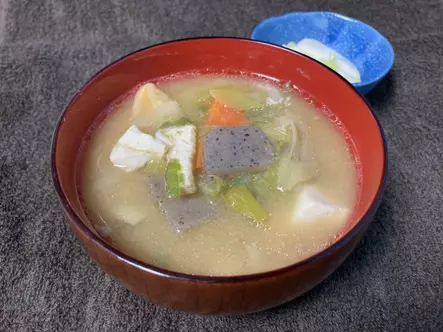
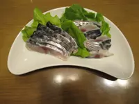
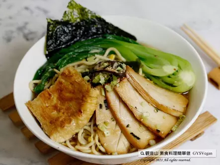

日本料理

味噌湯
日本家庭經常烹煮被視為「健康美味、可增加免疫的味噌湯」
前往味噌湯食譜

生魚片
生壽司(kizushi)不是一般所想像的壽司.就是生魚片. 在日本關西地區常看這作法. 先用鹽醋醃漬了.不僅去腥作用,更多提鮮味. 清爽開胃,亦適合當作下日本酒菜囉
前往生魚片食譜

拉麵
香鮮味美的湯頭，由昆布的海味、醬油的鮮味，精心調製。 絕對是日式拉麵最具代表性的風味，快跟著觀音山主廚，一起素食料理簡單做吧
前往拉麵食譜